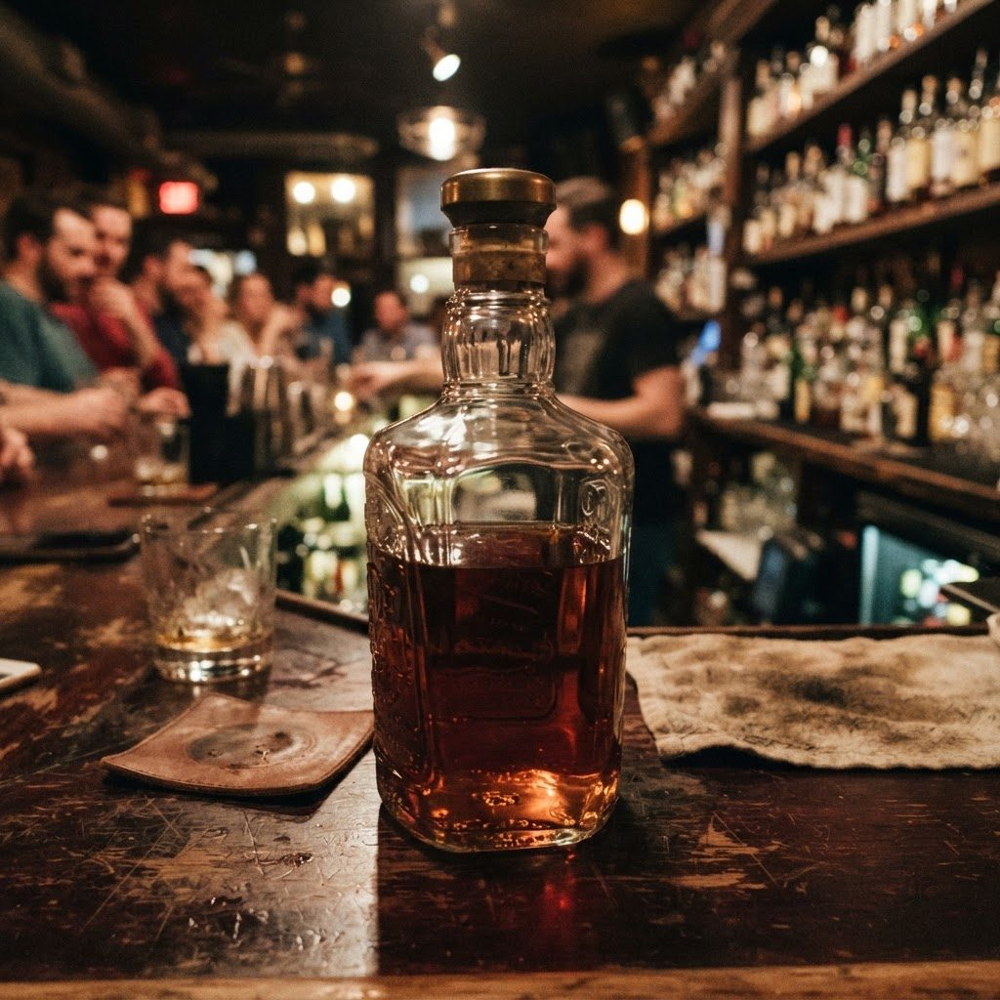
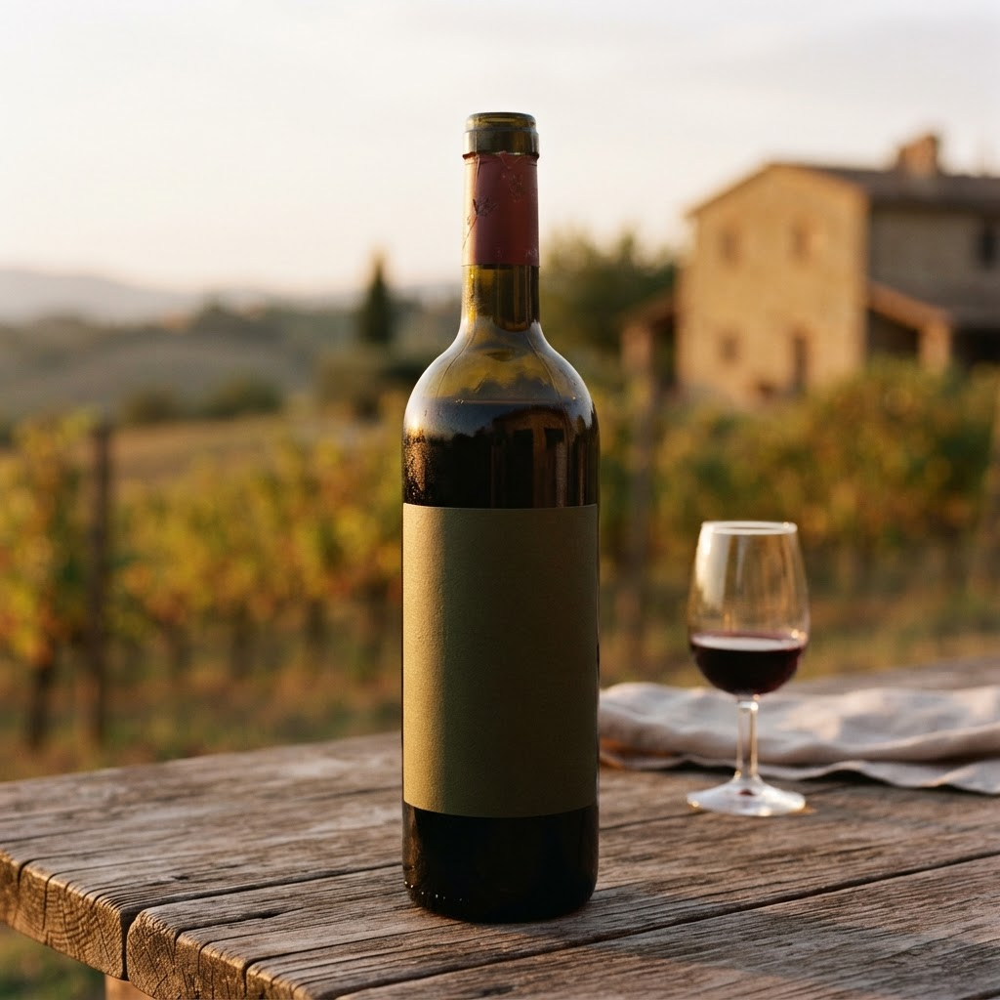
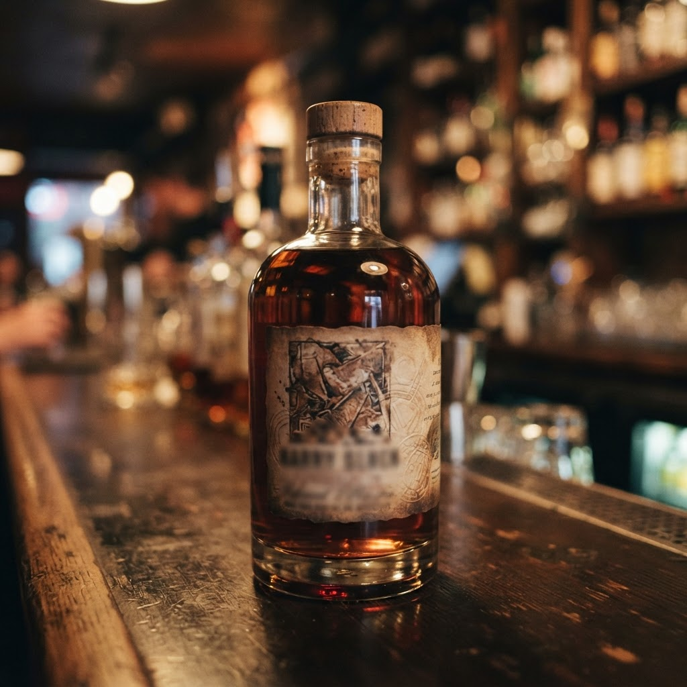

Петродворцов и партнёры — Петродворцовый
Доставка алкоголя по Петербургу круглосуточно
Привозим вино, крепкий алкоголь, пиво и закуски по всем районам Санкт-Петербурга и в ближние пригороды: Мурино, Кудрово, Всеволожск, Шушары. Курьер приезжает за 40-60 минут, днём и ночью. Только для покупателей старше 18 лет, возраст проверяем при передаче заказа.
О нас
Небольшая петербургская служба доставки: свой склад на юге города, двенадцать курьеров на автомобилях и собственная диспетчерская. За месяц отвозим около четырёх тысяч заказов. Ассортимент более 1500 позиций: от российских вин до выдержанных коньяков и виски.
Частые вопросы
Доставляете ли ночью?
Да, работаем круглосуточно без выходных, ночью время доставки по городу 50-70 минут.
Можно ли заказать в пригород?
Да, возим в Мурино, Кудрово, Всеволожск, Шушары, Парголово и другие ближние пригороды, стоимость называем при заказе.
Контакты и время приёма
Принимаем заказы круглосуточно по телефону, в мессенджерах и через телеграм-бота. Склад и диспетчерская в Санкт-Петербурге, доставка по всем районам города и ближним пригородам.
Заказать доставку
Оформите заказ сейчас: привезём за 40-60 минут в любой район Петербурга, круглосуточно.
Призыв5 статей
Все статьи

Доставка алкоголя спб с доставкой в Петродворцовом районеНужна ли вам оперативная доставка алкоголя спб в Петродворцовый район в ночное время? География района усложняет логистику, но наша служба обеспечивает точно… Доставка вина спб 24 часа с доставкой в Петродворцовом районеПетродворцовый район славится исторической архитектурой и удаленностью от центральных магистралей, что создает сложности для ночного логистического сервиса. …
Доставка вина спб 24 часа с доставкой в Петродворцовом районеПетродворцовый район славится исторической архитектурой и удаленностью от центральных магистралей, что создает сложности для ночного логистического сервиса. … Доставка алкоголя спб 24 с доставкой в Петродворцовом районеПетродворцовый район славится своей архитектурой и удаленностью от центра, что создает сложности с логистикой в ночное время. Когда требуется доставка алкого…
Доставка алкоголя спб 24 с доставкой в Петродворцовом районеПетродворцовый район славится своей архитектурой и удаленностью от центра, что создает сложности с логистикой в ночное время. Когда требуется доставка алкого…
Сколько стоит купить вино с доставкой на дом спб в Петродворцовом районеПетродворцовый район славится удаленностью от центра, что затрудняет поиск оперативного сервиса в ночное время. Однако логистические алгоритмы позволяют орга…
Доставка алкоголя спб бесплатно с доставкой в Петродворцовом районеПетродворцовый район отличается сложной логистикой и удаленностью жилых массивов, что часто затрудняет быстрый сервис. Организованная доставка алкоголя СПб б…